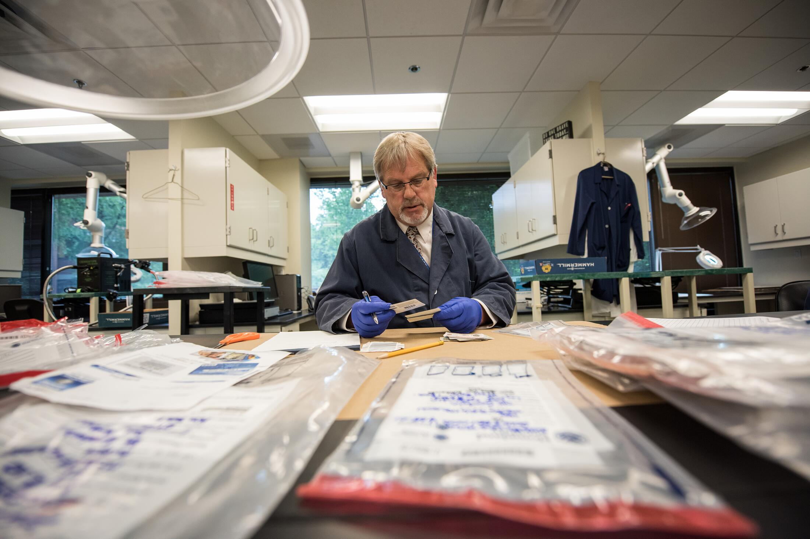
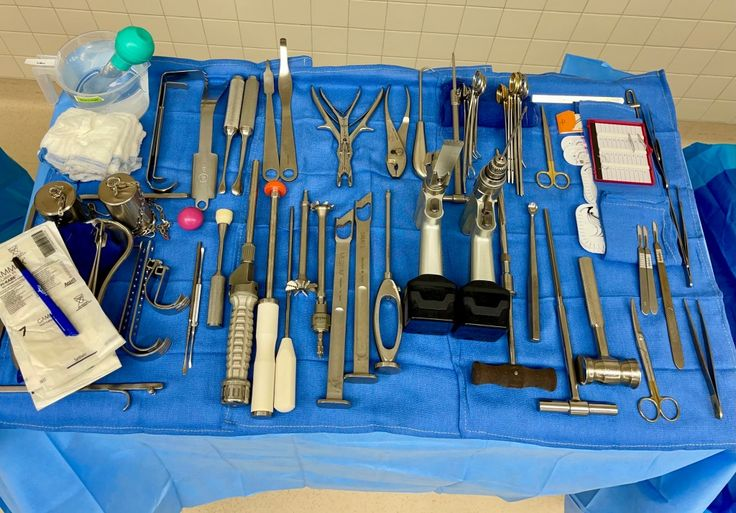
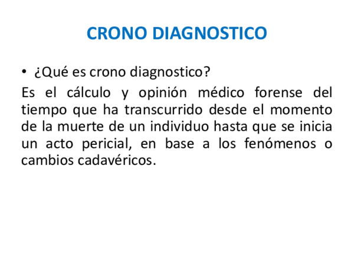

Cuando una víctima ya no puede contar su historia, la medicina forense toma la palabra. También conocida como medicina legal, esta especialidad médica se encarga de determinar las causas, la manera y el momento de la muerte mediante un procedimiento científico conocido como autopsia.
El médico forense examina el cuerpo externa e internamente buscando traumas, heridas por arma blanca o de fuego, marcas de estrangulamiento o signos de envenenamiento. Su trabajo es vital para diferenciar entre un homicidio, un suicidio, un accidente o una muerte natural.



Uno de los conceptos más importantes en esta área es el Cronotanatodiagnóstico, que es el cálculo del tiempo aproximado que lleva fallecida una persona. Para ello, los médicos observan diferentes fenómenos en el cuerpo:
Toda esta información se documenta en un dictamen médico que se presenta ante un juez, siendo una pieza innegable de evidencia física en cualquier juicio penal.